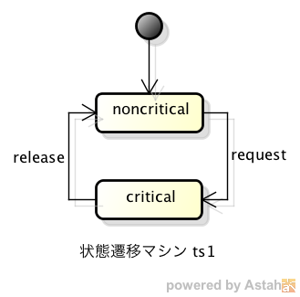
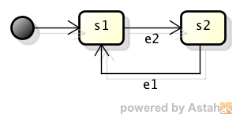
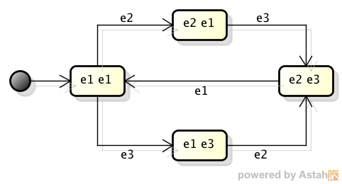
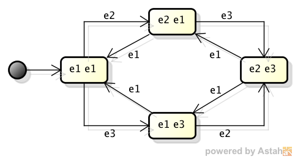
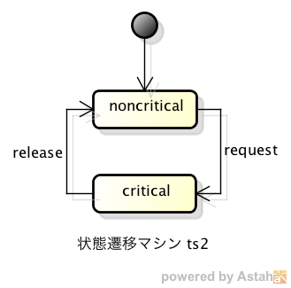
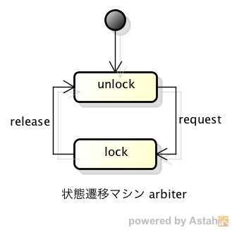
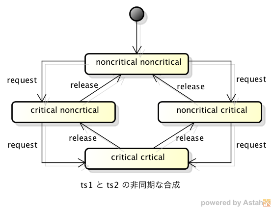
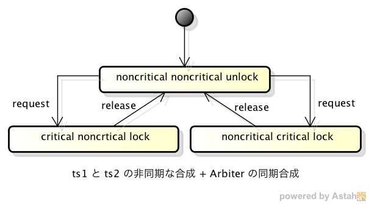

Eclipse XText を利用した状態遷移モデルの記述とモデル・チェッカの利用に向けて
2013年10月14日 小林修
取り組むべき課題
状態遷移でモデル化された複数のコンポーネントが部分的に同期しつつ並列に動作するようなシステムの設計において、その性質を状態遷移モデルのレベルで検
証する為の手法として「モデル検査」があり、その為のツールとして幾つかの「モデル・チェッカ」が実際に利用されています。しかし、これらのツールで検査を
行う為には、ツール特有のモデル記述言語を習得する必要があり、モデル検査を専門としない一般のソフトウェア開発者に取っては、やや敷居が高いものになっ
ています。
ここでは、状態遷移モデルを記述する為に、一般のソフトウェア開発者のもつ状態遷移システムのイメージを直接的に記述できる簡易言語表現を定義し、それによって記述された状態遷移モデルを特定のモデル・チェッカ（ここ
ではNuSMV）の入力形式に自動変換することで、モデル検査の技術を一般のソフトウェア開発においてより利用しやすくすることを目指します。
環境について
状態遷移モデル記述言語の定義とモデル・チェッカの入力形式へのジェネレータを作成する環境として、Eclipse XText を使います。XText の特徴としては、以下のものがあります。
- 無償で使えるオープンソース・プロジェクト。
- Windows、Linux、Mac のどれでも使えるマルチ・プラットフォーム。
- BNF記法に似た記述法により独自言語の文法定義が簡単にできる。
- 定義された文法の構成要素を表現するJavaクラスが自動生成され、Javaプログラムで簡単に操作できるようになる。
- 定義した独自言語による記述をサポートする専用エディタが自動生成される。
- 定義した独自言語による記述から別の形式（ここではモデル・チェッカのモデル記法）に変換するためのジェネレータを作成するための簡易言語（XTendと呼ばれる）が用意されている。
以上のことから、Eclipse XText をインストールするだけですぐに独自言語の定義を始められ、言語の定義とジェネレータの作成を少しずつ段階的に進めていくことができます。
ただし、ジェネレータの作成にはJavaのプログラミングが必要となります。
状態遷移モデルの記述法
状態遷移マシンの定義
ここでは、ひとつの状態遷移マシンを以下の4つの要素の組み合わせとして表現します。
- 状態の集合
- イベントの集合
- 遷移の集合
- 初期状態の集合
これらの要素から成るひとつの状態遷移マシンを、以下のように記述することにします。
transition system 状態遷移マシン名 {
states { 状態名の並び }
events { イベント名の並び }
transitions {
遷移元状態名 * イベント名 -> 遷移先状態名
（繰り返し）
}
initial states { 初期状態名の並び }
}
状態遷移マシンの記述例
以下の状態遷移図で表される状態遷移マシンを上記の記法で記述してみます。

transition system ts1 {
states { nonCritical critical }
events { request release }
transitions {
nonCritical * request -> critical
critical * release -> nonCritical
}
initial states { nonCritical }
}
状態遷移マシンの合成
システムが複数の状態遷移マシンから成る場合、その組み合わせ方には以下の２通りがあります。
- 各状態遷移マシンの遷移が一斉に同期して発生する。
- 各状態遷移マシンの遷移が交互に不特定の順序で発生する。
また、状態遷移マシンの個々の遷移に関しても、以下の２通りがあります。
- 他の状態遷移マシンの遷移とは無関係に、自身の状態によってのみ遷移が決まるもの。
- 他の状態遷移マシンの特定の遷移と同時にしか遷移できないもの（同期的遷移）。
ここでは、各状態遷移マシンの遷移が交互に不特定順序で発生し、一部の遷移について同期的である場合を考えます。遷移を同期させるかどうかは、その遷移の発生要因となるイベントが、合成対象の状態遷移マシンに共通のイベントかどうかで決まるものとします。
状態遷移マシンの合成を以下の記号で表します。
TS1 || TS2
この記法では、両方の状態遷移マシンの定義に含まれるイベントによる遷移は、両方の状態遷移マシンが共に遷移可能な場合のみ同時に遷移し（同期的遷移）、一方のみに含まれるイベントによる遷移は、個々の状態遷移マシン毎に遷移します。
TS1 ||| TS3
この記法では、イベントが両方の状態遷移マシンに含まれるかどうか関係なしに、個々の状態遷移マシン毎に遷移します。
例として、以下の２つの状態遷移マシンを上記の２通りの方法で合成した結果を示します。
状態遷移マシン sample1

状態遷移マシン sample2
sample1 || sample2

sample1 ||| sample2

複数の状態遷移マシンから成るシステムの定義
複数の状態遷移マシンから成るシステムの定義は以下のように記述します。
mode モデル名 {
状態遷移マシンの定義
（繰り返し）
main = 状態遷移マシンの合成
}
例として、以下の３つの状態遷移マシンを合成したシステムの記述例を示します。
ここでは、それぞれ独立して動く２つの状態遷移マシンがあり、それぞれ２つの状態 noncritical と critical
を交互に行き来します。この２つが同時に状態 critical に入らないように、調停者となる状態遷移マシン arbiter
をイベントで同期を取る形で合成します。


model CriticalSections2 {
transition system ts1 {
states { nonCritical critical }
events { request release }
transitions {
nonCritical * request -> critical
critical * release -> nonCritical
}
initial states { nonCritical }
}
transition system ts2 {
states { nonCritical critical }
events { request release }
transitions {
nonCritical * request -> critical
critical * release -> nonCritical
}
initial states { nonCritical }
}
transition system arbiter {
states { unlock lock }
events { request release }
transitions {
unlock * request -> lock
lock * release -> unlock
}
initial states { unlock }
}
main = (ts1 ||| ts2) || arbiter
}
ここで、状態遷移マシンの合成 "(ts1 ||| ts2) || arbiter" では、以下の２段階で合成が行われます。
まず、"ts1 ||| ts2" により、t1 と t2 の２つが、それぞれ独自に遷移する形で合成されて、以下の状態遷移マシンを形成します。

これに、arbiter の状態遷移マシンをイベントで同期させる形で合成すると、全体の遷移が、２つのイベント request と release が交互に発生する形に制限されて、以下のようになります。

これにより、ts1 と ts2 が同時に状態 critical に入らないよう制御されます。
XText による文法定義
上記の記述法をXTextで文法定義すると、以下のようになります。
NuSMV入力形式への変換
上記で定義した状態遷移モデルを NuSMVの入力言語の形式に変換するためのジェネレータを、Eclipse XTtext では、XTend というJavaを拡張した言語によって作成することができます。
XTendによるジェネレータの記述
ジェネレータから呼び出すヘルパークラス
このジェネレータによって上記の例から変換された NuSMV の入力言語形式
ここで、変換結果の NuSMV 形式の記述は、以下のように構成されています。
MODULE main
CONSTANTS
各状態遷移マシンの個別の状態を表すシンボルの定義
VAR
合成結果の状態遷移マシンの状態を表す変数 state の定義
ASSIGN
変数 state の初期値設定
変数 state の値の変化（合成結果のシステムの遷移）の定義
DEFINE
合成結果の状態遷移マシンの状態と個別の状態遷移マシンの状態の対応関係の定義
合成結果の状態遷移マシンのデッドロック検出用の変数の定義
NuSMVによるモデル検査
上記のジェネレータによって変換されたNuSMVの入力言語記述を実際に NuSMV に読み込ませて、モデルを検査することができます。
ここでは、NuSMV の対話モード（オプション -int を指定する）により、検査を実行する例を示します。
排他制御の例
排他制御のモデルの検査の様子を示すため、まず、排他制御が行われない、不完全なモデルの検査を試します。
モデルの記述
合成結果の状態遷移マシン
NuSMV形式への変換結果
ここで検査したい、排他制御として必要な条件「ts1 と ts2 が同時に状態 critical
に入ることが無いこと」は、NuSMVがサポートする検査式の形式では以下のように表されます。（NuSMV では、CTL
(Computationnal Tree Logic) と LTL (Linear Temporal Logic)
の２通りの記述が可能なので、それぞれでの記述を示します。）
CTL による記述： AG !((ts1 = critical) & (ts2 = critical))
LTL による記述： G !((ts1 = critical) & (ts2 = critical))
ます、NuSMV を対話モードで起動し、モデルファイルを読み込ませます。
$ NuSMV -int CriticalSections1.smv
NuSMV > go
次に、NuSMV のコマンド check_ctlspec を使って上記の CTL検査式を検査します。
この場合、排他制御がされていないため、検査は「失敗」し、反例となる状態遷移例が表示されます。
NuSMV > check_ctlspec -p "AG !((ts1 = critical) & (ts2 = critical))"
-- specification AG !(ts1 = critical & ts2 = critical) is false
-- as demonstrated by the following execution sequence
Trace Description: CTL Counterexample
Trace Type: Counterexample
-> State: 1.1 <-
state = nonCritical_nonCritical
deadlock = FALSE
ts2 = nonCritical
ts1 = nonCritical
-> State: 1.2 <-
state = critical_nonCritical
ts1 = critical
-> State: 1.3 <-
state = critical_critical
ts2 = critical
同様に、NuSMV の check_ltlspec コマンドで上記の LTL検査式を検査してみます。
NuSMV > check_ltlspec -p "G !((ts1 = critical) & (ts2 = critical))"
-- specification G !(ts1 = critical & ts2 = critical) is false
-- as demonstrated by the following execution sequence
Trace Description: LTL Counterexample
Trace Type: Counterexample
-> State: 2.1 <-
state = nonCritical_nonCritical
deadlock = FALSE
ts2 = nonCritical
ts1 = nonCritical
-- Loop starts here
-> State: 2.2 <-
state = critical_nonCritical
ts1 = critical
-> State: 2.3 <-
state = critical_critical
ts2 = critical
-- Loop starts here
-> State: 2.4 <-
state = critical_nonCritical
ts2 = nonCritical
-> State: 2.5 <-
state = nonCritical_nonCritical
ts1 = nonCritical
-> State: 2.6 <-
state = critical_nonCritical
ts1 = critical
次に、排他制御を加えたモデルの検査を試します。
モデルの記述
合成結果の状態遷移マシン
NuSMV形式への変換結果
NuSMV による検査結果
$ NuSMV -int CriticalSections2.smv
NuSMV > go
NuSMV > check_ctlspec -p "AG !((ts1 = critical) & (ts2 = critical))"
-- specification AG !(ts1 = critical & ts2 = critical) is true
NuSMV > check_ltlspec -p "G !((ts1 = critical) & (ts2 = critical))"
-- specification G !(ts1 = critical & ts2 = critical) is true
この場合、排他制御が効いて、上記の条件が満たされる事が示されました。
デッドロック検出の例
ここでは、ある作業を実行するために２つのリソースが同時に必要な状況で、２人のユーザが同時にその作業をしようとした場合に発生するデッドロックを例に取ります。
まずは、デッドロックの発生する不完全なモデルを検査します。
モデルの記述
このモデルでは、一方のユーザが resource1 → resouece2 の順序でリソースの獲得を試み、もう一方のユーザがそれとは逆に
resourc2→ resouece1
の順序でリソースの獲得を試みる為、それぞれが一つのリソースを獲得した状態で、他のリソースの解放を待つ睨み合いが発生します。
transition system user1 {
...
transitions {
idle * request1 -> requesting
requesting * request2 -> critical
...
transition system user2 {
...
transitions {
idle * request2 -> requesting
requesting * request1 -> critical
...
NuSMV形式への変換結果
変換結果の NuSMV形式のモデル記述には、ジェネレータによって、全体システムが遷移先を失った事を示す状態 __terminal__ と、システムがその __terminal__ 状態に遷移したかどうかを示す論理変数 deadlock が追加されます。
VAR
state: {
...
__terminal__
};
...
DEFINE
...
deadlock := case
state = __terminal__ : TRUE;
TRUE: FALSE;
esac;
そのため、「全体システムがデッドロックしないこと」を検査する検査式は、以下の様になります。
CTL による記述： AG ! deadlock
LTL による記述： G ! deadlock
NuSMV による検査結果
$ NuSMV -int ResourceContension1.smv
NuSMV > go
NuSMV > check_ctlspec -p "AG ! deadlock"
-- specification AG !deadlock is false
-- as demonstrated by the following execution sequence
Trace Description: CTL Counterexample
Trace Type: Counterexample
-> State: 1.1 <-
state = idle_idle_unlock_unlock
deadlock = FALSE
resource2 = unlock
resource1 = unlock
user2 = idle
user1 = idle
-> State: 1.2 <-
state = idle_requesting_unlock_lock
resource2 = lock
user2 = requesting
-> State: 1.3 <-
state = requesting_requesting_lock_lock
resource1 = lock
user1 = requesting
-> State: 1.4 <-
state = __terminal__
deadlock = TRUE
resource2 = __terminal__
resource1 = __terminal__
user2 = __terminal__
user1 = __terminal__
NuSMV > check_ltlspec -p "G ! deadlock"
-- specification G !deadlock is false
-- as demonstrated by the following execution sequence
Trace Description: LTL Counterexample
Trace Type: Counterexample
-> State: 1.1 <-
state = idle_idle_unlock_unlock
deadlock = FALSE
resource2 = unlock
resource1 = unlock
user2 = idle
user1 = idle
-> State: 1.2 <-
state = idle_requesting_unlock_lock
resource2 = lock
user2 = requesting
-> State: 1.3 <-
state = requesting_requesting_lock_lock
resource1 = lock
user1 = requesting
-- Loop starts here
-> State: 1.4 <-
state = __terminal__
deadlock = TRUE
resource2 = __terminal__
resource1 = __terminal__
user2 = __terminal__
user1 = __terminal__
-- Loop starts here
-> State: 1.5 <-
-> State: 1.6 <-
デッドロックを解消するために、user2 がリソースを獲得する順序を user1と同じにし、睨み合いが発生しないようにモデルを変更します。
モデルの記述
transition system user1 {
...
transitions {
idle * request1 -> requesting
requesting * request2 -> critical
...
transition system user2 {
...
transitions {
idle * request1 -> requesting
requesting * request2 -> critical
...
NuSMV形式への変換結果
NuSMV による検査結果
$ NuSMV -int ResourceContension2.smv
NuSMV > go
NuSMV > check_ctlspec -p "AG ! deadlock"
-- specification AG !deadlock is true
NuSMV > check_ltlspec -p "G ! deadlock"
-- specification G !deadlock is true
まとめ
ここでは、複数の状態遷移マシンを合成して出来るシステムのモデルを記述する簡易言語の定義と、モデル・チェッカ NuSMV の入力形式への変換を、Eclipse XText を利用して（比較的）簡単に実現できることを確認しました。
ただし、まだ実用できるレベルには程遠い「練習課題」のレベルです。
現在の限界としては、以下があります。
- XTendとJavaによるジェネレータの処理コスト（時間・メモリ量）が評価されていない。
- 合成する状態遷移マシンの数が増えると、合成結果のNuSMVモデルの状態名がどんどん長くなってしまう。
- イベント発生に関するガード条件が指定できない。
- システムの状態に関する検査が、構成要素の状態遷移マシンが「どの状態にいるか」の単純な命題に限定される。
など。
これらを課題として、今後、少しずつ拡張・充実を図っていきたいと思います。